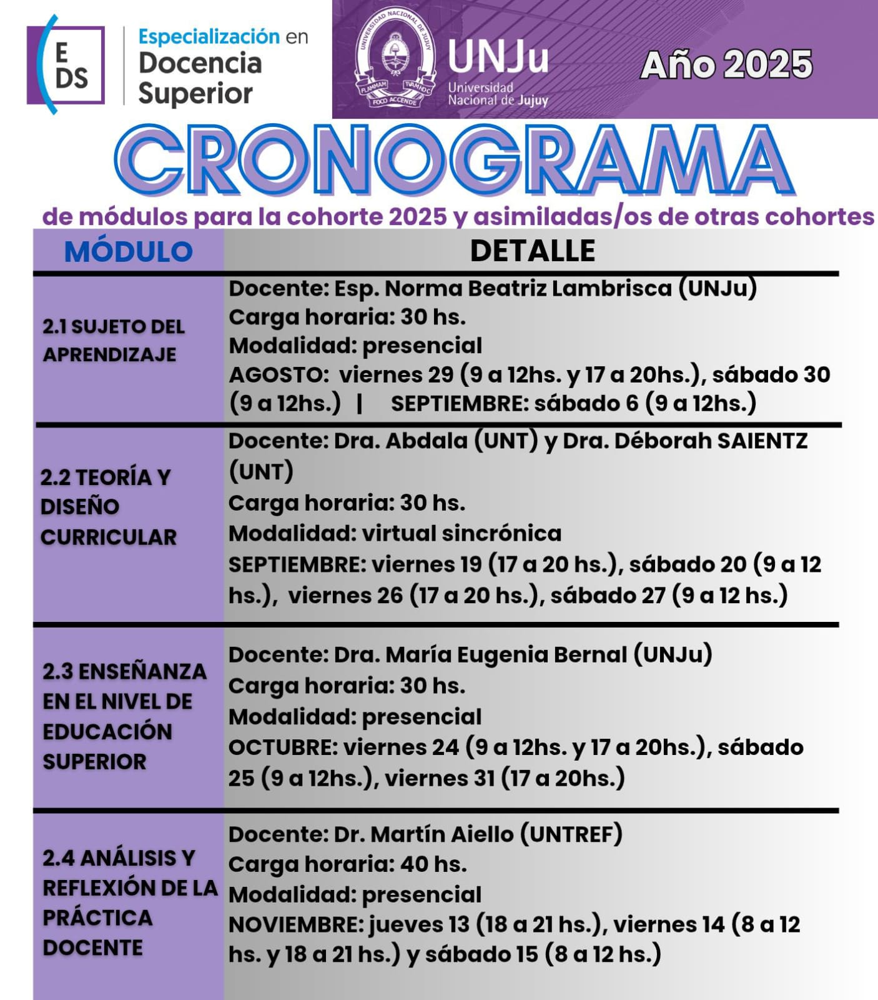
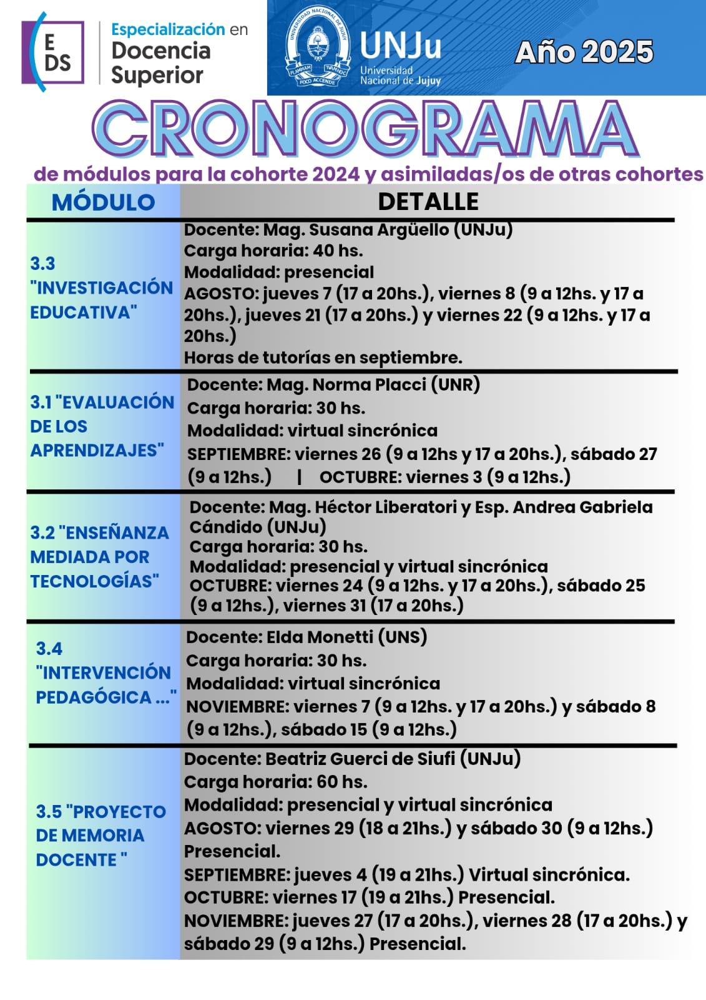
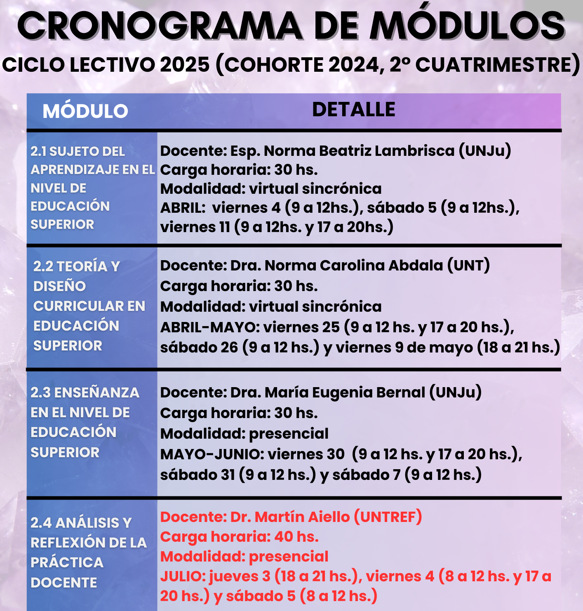

Ago 28
MÓDULO 2.1
Se informa que el módulo 2.1 "SUJETO DEL APRENDIZAJE EN EL NIVEL DE EDUCACIÓN SUPERIOR", Profesora Norma Beatriz Lambrisca, tendrá dos modalidades de dictado:
29 de Agosto: Virtual Sincrónica (Se enviará link por correo)
30 de Agosto: Presencial: Aula 2, Otero 257, 2do Piso
Ago28
Módulo 3.5
Se informa que el módulo 3.5 "PROYECTO DE MEMORIA DOCENTE", Profesora Beatriz Guerci de SIUFI, tendrá modalidad presencial durante los sig. días:
29 de Agosto: Aula 5, Otero 262
30 de Agosto: Aula 20, Otero 262
Ago 18
INSCRIPCIONES 2026
Las inscripciones de la cohorte 2026 serán en este 2do. cuatrimestre. Las fechas exactas serán dadas a conocer en su momento por este medio.
Requisito principal: Título de grado o terciario con una duración igual o mayor de 4 años.

Jun19
COHORTE 2025 2º CUAT
Cronograma de la cohorte 2025 2do cuatrimestre del plan de estudios. Ciclo lectivo 2025.

Jul03
COHORTE 2024 2º CUAT
Cronograma de la cohorte 2024 2do cuatrimestre del plan de estudios (Eje 3). Ciclo lectivo 2025.
Mar12
CRONOGRAMA 1º CUAT
Cronograma de la cohorte 2025 1ero cuatrimestre del plan de estudios. Ciclo lectivo 2025.
